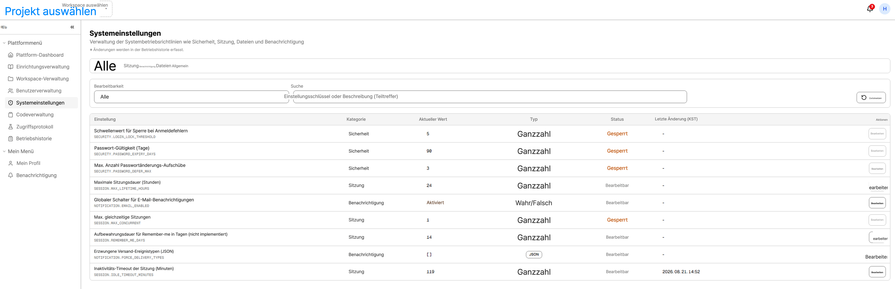
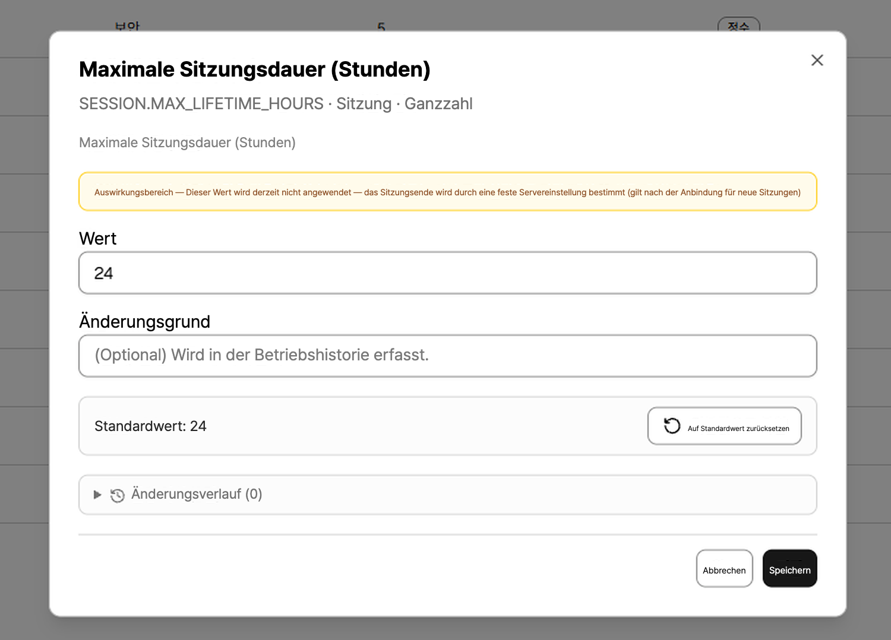
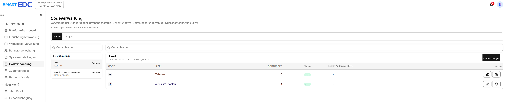
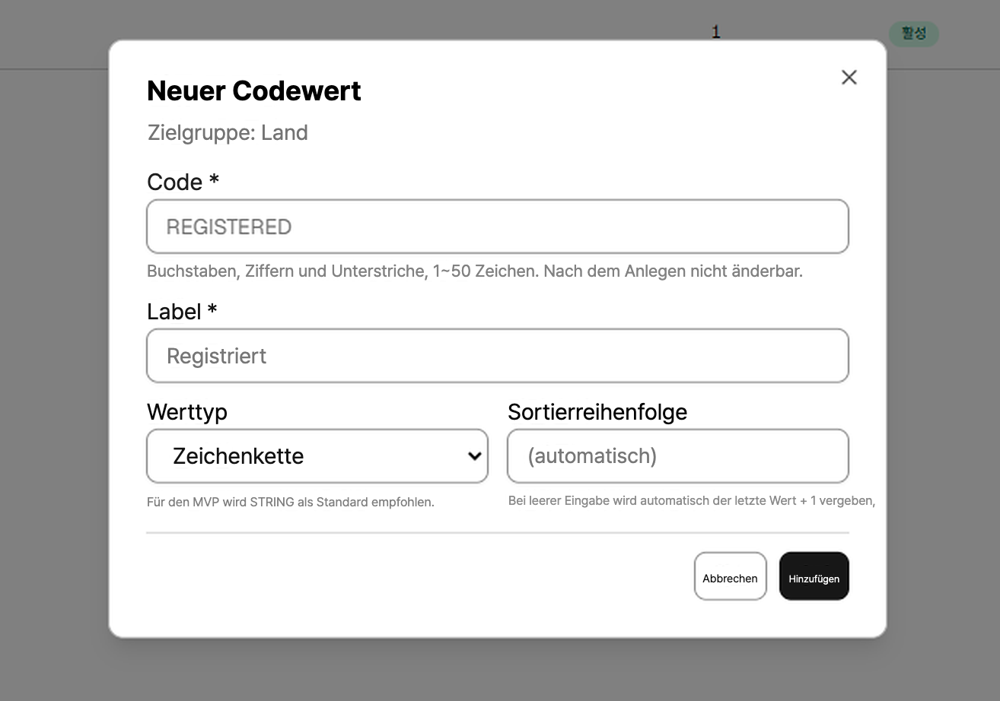
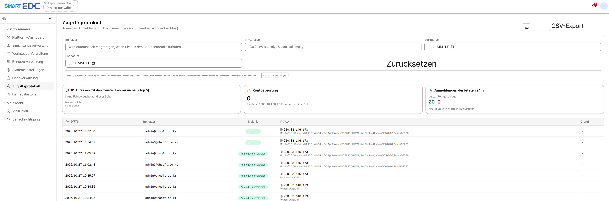
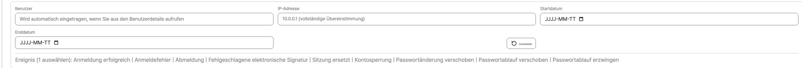
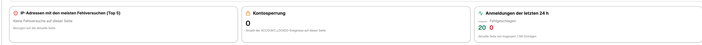
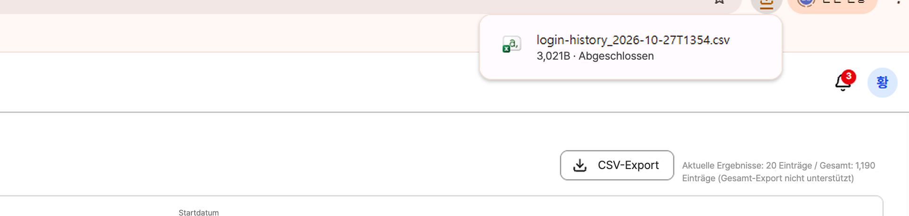
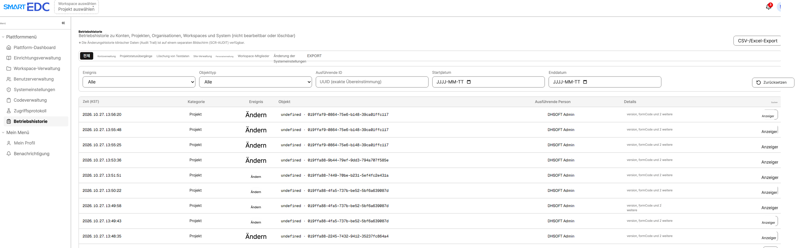
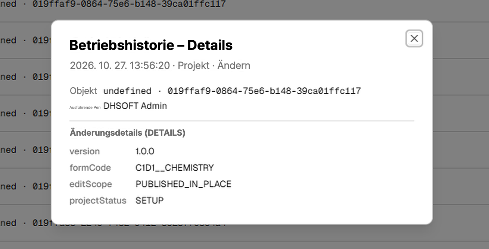

Plattformverwaltung
SCR-PLT-004·005·006·007 · Systemeinstellungen · Codeverwaltung · Zugriffsprotokoll · Betriebshistorie
Systemeinstellungen
- 1.1Bildschirmaufbau
- 1.2Einstellungswerte bearbeiten
1.1Bildschirmaufbau
Überblick
Dieser Bildschirm zeigt die für die gesamte Plattform geltenden Betriebsrichtlinien in einer Tabelle. Hier ändern Sie Werte nicht direkt. Der Bildschirm dient dazu, zu prüfen, welche Richtlinie auf welchen Wert eingestellt ist. Nur Einträge, die sich ändern lassen, öffnen ein Bearbeitungsfenster.
Bildschirmbeschreibung

Kategorie-Tabs — Alle · Sicherheit · Sitzung · Benachrichtigung · Dateien · Allgemein. Workspace-Administratoren sehen nur Sitzung · Benachrichtigung.
Bearbeitbarkeit — Blenden Sie gesperrte Einträge aus, um nur die Einträge zu sehen, die sich ändern lassen.
Suche — Suchen Sie nach dem Einstellungsschlüssel oder einem Teil der Beschreibung.
Zurücksetzen — Löscht alle gesetzten Bedingungen.
Bearbeiten — Öffnet das Fenster zum Ändern des Werts dieses Eintrags 1.2. Bei gesperrten Einträgen ist die Schaltfläche blass dargestellt und lässt sich nicht auswählen.
Der einzige Zugang zu diesem Bildschirm ist im linken Menü über Plattformmenü > Systemeinstellungen.
Der Hinweis im Kopfbereich lautet „※ Die Änderungshistorie wird in der Betriebshistorie erfasst.“ Wer wann was geändert hat, prüfen Sie in der Betriebshistorie 4.1.
Typ — Ganzzahl · Wahr/Falsch · JSON usw. legt das Format des Werts fest. Die Eingabeform im Bearbeitungsfenster richtet sich nach diesem Typ.
Status — Bearbeitbar oder 🔒Gesperrt. Gesperrt bedeutet, dass das System den Eintrag festgelegt hat. Auch Administratoren können ihn nicht ändern.
Letzte Änderung (KST) — Wurde der Wert nie geändert, steht hier -.
Der englische Text unter dem Namen des Eintrags ist der Einstellungsschlüssel. Verwenden Sie diesen Schlüssel für die Suche und für die Abfrage der Betriebshistorie.
Zu beachten
Unbedingt prüfen Datenschäden · Formular nicht abschließbar
- • Die hier geänderten Werte wirken sich nicht auf den laufenden Systembetrieb aus. Werte und Änderungshistorie werden gespeichert, die tatsächlichen Entscheidungen (zum Beispiel Schwellenwert für Anmeldesperren oder Sitzungsablauf) werden aber über eine eigene Einstellung getroffen. Im Bearbeitungsfenster weist der Hinweis zum Auswirkungsbereich bei jedem Eintrag darauf hin. Bitte prüfen Sie ihn unbedingt 1.2.
1.2Einstellungswerte bearbeiten
Überblick
Dieses Fenster öffnet sich über Bearbeiten in der Tabelle. Es ändert nur einen Wert. Der Hinweis zum Auswirkungsbereich oben zeigt jedoch, ob der Wert tatsächlich verwendet wird. Lesen Sie ihn deshalb, bevor Sie etwas ändern.
Bildschirmbeschreibung

Wert — Geben Sie den Wert im Format des Typs ein. Bei einer Ganzzahl erscheint vor dem Speichern ein Hinweis, wenn der Wert außerhalb des empfohlenen Bereichs liegt.
Änderungsgrund — Optional. Ein eingegebener Grund wird zusammen mit der Betriebshistorie erfasst. Es ist sinnvoll, den Grund der Änderung festzuhalten.
Auf Standardwert zurücksetzen — Trägt nur den Standardwert in das Eingabefeld ein. Damit wird noch nichts gespeichert. Danach müssen Sie noch Speichern wählen.
Speichern — Übernimmt den Wert. Mit Abbrechen daneben verwerfen Sie die Änderung und schließen das Fenster.
Im Kopf des Fensters stehen Einstellungsschlüssel · Kategorie · Typ. Prüfen Sie hier, ob Sie nicht versehentlich einen anderen Eintrag geöffnet haben.
Der gelbe Hinweis Auswirkungsbereich zeigt, ob sich der Wert auf das tatsächliche Verhalten auswirkt. Beachten Sie die Hinweise unten.
Änderungshistorie — Die Änderungen nur für diesen Eintrag. Steht die Anzahl auf 0, wurde der Wert noch nie geändert.
Abbrechen — Verwirft die Änderung.
Das Gleiche gilt, wenn Sie außerhalb des Fensters klicken oder das Fenster schließen.
Zu beachten
Unbedingt prüfen Datenschäden · Formular nicht abschließbar
- • Derzeit wird bei allen Einträgen angezeigt, dass sie „nicht angewendet werden“. Werte und Änderungshistorie werden gespeichert, die tatsächlichen Entscheidungen (etwa Anmeldesperre oder Sitzungsablauf) werden aber über eine eigene Einstellung getroffen. Wenn Sie eine Richtlinie wirklich ändern müssen, reicht dieser Bildschirm allein nicht aus. Wenden Sie sich dann bitte an die Systemverantwortlichen.
Codeverwaltung
- 2.1Bildschirmaufbau
- 2.2Codewert hinzufügen
2.1Bildschirmaufbau
Überblick
Hier verwalten Sie die Standardcodes, die in Dropdown-Listen und Badges auf dem gesamten Bildschirm verwendet werden. Der Bildschirm ist zweigeteilt: Links wählen Sie eine Codegruppe, rechts erscheinen die Werte dieser Gruppe. Status der Probanden, Typ der Einrichtung, Grund für einen Besuch oder Nichtbesuch usw. kommen alle von hier.
Bildschirmbeschreibung

Tabs Plattform / Projekt — Die Plattform-Codes gelten für alle Projekte, der Projekt-Tab enthält nur die Codes des jeweiligen Projekts. Der Tab Projekt lässt sich nur öffnen, wenn Sie in einem Projekt arbeiten.
+ Wert hinzufügen — Fügt der ausgewählten Gruppe einen Codewert hinzu 2.2.
Aktionen je Zeile — Der linke Stift bearbeitet Label und Sortierreihenfolge, die rechte Schaltfläche wechselt zwischen aktiv und inaktiv. Beim Wechsel von aktiv zu inaktiv erscheint noch ein Bestätigungsfenster.
Wählen Sie eine Codegruppe, wechselt die Werteliste rechts zu dieser Gruppe.
Der einzige Zugang zu diesem Bildschirm ist im linken Menü über Plattformmenü > Codeverwaltung.
Der Hinweis „※ Änderungen werden in der Betriebshistorie erfasst.“ gilt auch für Codeänderungen 4.1.
Im Gruppenkopf stehen Gruppencode · Geltungsbereich · Anzahl der Werte · Typ. Gruppen vom Typ SYSTEM sind vom System vorgegebene Standardcodes.
Spaltenaufbau — CODE · LABEL · SORTORDER · Status · Letzte Änderung (KST) · Aktion. Angezeigt wird im Bildschirm nicht der CODE, sondern das LABEL.
Status — Ein auf inaktiv gesetzter Wert lässt sich nicht mehr neu auswählen. Bereits mit diesem Wert gespeicherte Daten bleiben unverändert erhalten.
Die Suche gibt es jeweils links (Gruppen) und rechts (Werte).
Zu beachten
Leicht missverständliches Verhalten
- • Plattformweite Codes können nur Systemadministratoren bearbeiten. Workspace-Administratoren und Data Manager bearbeiten nur die Codes im Tab Projekt. Dieser Tab lässt sich nur öffnen, wenn Sie in einem Projekt arbeiten.
2.2Codewert hinzufügen
Überblick
Fügt der ausgewählten Gruppe einen Codewert hinzu. Code ist der Wert, den das System speichert. Label ist der Text, der auf dem Bildschirm angezeigt wird. Wenn Sie beides verwechseln, sieht der Bildschirm richtig aus, der gespeicherte Wert ist aber ein anderer. Achten Sie deshalb darauf.
Bildschirmbeschreibung

Code * — Der Wert, den das System speichert. Erlaubt sind englische Buchstaben, Ziffern und Unterstriche (1 bis 50 Zeichen). Nach dem Anlegen lässt sich der Code nicht mehr ändern.
Label * — Der Text, der auf dem Bildschirm angezeigt wird. Diesen Wert können Sie später ändern.
Werttyp — Standard ist Zeichenkette. In der Regel lassen Sie die Voreinstellung unverändert.
Sortierreihenfolge — Die Reihenfolge in der Liste. Bleibt das Feld leer, wird sie automatisch vergeben.
Hinzufügen — Legt den Wert an. Mit Abbrechen daneben wird die Eingabe verworfen.
Im Kopf des Fensters steht die Zielgruppe. Prüfen Sie hier, ob Sie den Wert nicht in eine andere Gruppe eintragen.
Unter dem Feld Code stehen die zulässigen Zeichen, die Länge und der Hinweis, dass sich der Code nicht ändern lässt.
Hinweis zum Werttyp — Zeichenkette wird empfohlen.
Hinweis zur Sortierreihenfolge — Bleibt das Feld leer, wird automatisch der letzte Wert + 1 vergeben.
Abbrechen — Schließt das Fenster. Es wird nichts angelegt.
Zu beachten
Unbedingt prüfen Datenschäden · Formular nicht abschließbar
- • Codes lassen sich nach dem Anlegen dauerhaft nicht mehr ändern. Sobald Daten mit diesem Code gespeichert sind, gibt es keine Möglichkeit, den Wert zurückzusetzen. Prüfen Sie daher vor der Eingabe, welches Codesystem in Studienstandards oder Berichtsvorlagen verwendet wird. Einen falsch angelegten Wert löschen Sie nicht, sondern setzen ihn auf inaktiv.
Zugriffsprotokoll
- 3.1Bildschirmaufbau
- 3.2Suche · Filter und Zusammenfassung
- 3.3CSV-Export
3.1Bildschirmaufbau
Überblick
Dieser Bildschirm zeigt, wer wann und von wo aus zugegriffen hat. Einträge werden nur hinzugefügt und lassen sich weder ändern noch löschen. Deshalb ist er die erste Quelle, wenn Sie Kontomissbrauch oder ungewöhnliche Zugriffe prüfen. Systemadministratoren sehen alle Einträge, Workspace-Administratoren nur den Bereich ihres Workspace.
Bildschirmbeschreibung

CSV-Export — Speichert das aktuell angezeigte Ergebnis als Datei 3.3.
Benutzer · IP-Adresse · Startdatum · Enddatum — Engen den Suchzeitraum ein 3.2.
Ereignis — Wählen Sie eines der neun Ereignisse, etwa erfolgreiche oder fehlgeschlagene Anmeldung, Abmeldung oder fehlgeschlagene elektronische Signatur 3.2.
Zurücksetzen — Löscht alle gesetzten Bedingungen.
Der ständige Zugang ist im linken Menü über Plattformmenü > Zugriffsprotokoll. Aus den Benutzerdetails in der Benutzerverwaltung gelangen Sie ebenfalls hierher, dann ist die Ansicht bereits auf diesen Benutzer gefiltert.
Neben der Schaltfläche steht Aktuelle Ergebnisse: N Einträge / Gesamt: N Einträge. Beachten Sie den Hinweis unten.
Drei Übersichtskarten: IP-Adressen mit den meisten Fehlversuchen, Kontosperrungen und Anmeldungen der letzten 24 h 3.2.
Spalten — Zeit (KST) · Benutzer · Ereignis · IP / UA · Grund. Die kleine Schrift unter der IP-Adresse ist das für den Zugriff verwendete Programm (UA).
Ereignis-Badges — Fehlschläge werden rot dargestellt und sind so auf einen Blick erkennbar.
Der Zusatz „(Änderung und Löschung nicht möglich)“ im Untertitel bedeutet, dass sich Einträge weder löschen noch ändern lassen.
Zu beachten
Leicht missverständliches Verhalten
- • Sie blättern nur mit Zurück / Weiter und nicht über Seitenzahlen. Da das Protokoll laufend wächst, können sich bei verschobenen Seitengrenzen Zeilen wiederholen oder fehlen. Deshalb gibt es keine direkte Seitenwahl.
3.2Suche · Filter und Zusammenfassung
Überblick
Es gibt fünf Suchbedingungen, die sich gegenseitig ergänzen. Die drei Übersichtskarten darunter fassen das Ergebnis zusammen, zählen aber nur die 20 Einträge, die auf der aktuellen Seite geladen sind. Das sollten Sie unbedingt beachten.
Bildschirmbeschreibung


Benutzer — Grenzt auf ein Konto ein.
IP-Adresse — Muss vollständig übereinstimmen. Bei nur einem Teil der Adresse wird nicht gefiltert.
Startdatum — Beginn des Suchzeitraums.
Enddatum — Ende des Suchzeitraums. Zusammen mit dem Startdatum legen Sie den Zeitraum fest.
Zurücksetzen — Löscht alle fünf Bedingungen.
Ereignis — Es ist immer nur eines wählbar. Ein erneut angeklicktes ausgewähltes Chip hebt die Auswahl auf.
Hinweis im Feld Benutzer — Wenn Sie aus den Benutzerdetails der Benutzerverwaltung kommen, wird dieses Konto automatisch eingetragen.
Hinweis im Feld IP-Adresse — Ein Beispiel für das Format wird angezeigt.
IP-Adressen mit den meisten Fehlversuchen (Top 5) — IP-Adressen, bei denen sich Anmeldefehler häufen. Wiederholen sich Fehlversuche von derselben IP-Adresse, kann ein Versuch zum Kontomissbrauch vorliegen.
Kontosperrung — Anzahl der Sperrereignisse.
Anmeldungen der letzten 24 h — Anzahl der erfolgreichen und fehlgeschlagenen Anmeldungen.
Alle drei Karten tragen unten den Vermerk Aktuelle Seite. Beachten Sie den Hinweis unten.
Zu beachten
Unbedingt prüfen Datenschäden · Formular nicht abschließbar
- • Die Übersichtskarten zählen nicht alle Einträge, sondern nur die 20 Einträge der aktuellen Seite. „Keine IP-Adressen mit Fehlversuchen“ oder „Kontosperrung 0“ bedeutet daher nur, dass auf dieser Seite nichts steht, nicht dass im gesamten Zeitraum nichts vorliegt. Für den Gesamtbestand setzen Sie den Ereignisfilter auf Anmeldefehler oder Kontosperrung und suchen erneut.
3.3CSV-Export
Überblick
Lädt das Ergebnis der Suche als Datei mit Kommas als Trennzeichen (CSV) herunter. Es ist kein separater Antrag und kein Warten nötig: Die Datei entsteht direkt auf dem Bildschirm, und der Zeitpunkt des Herunterladens steht im Dateinamen.
Bildschirmbeschreibung


CSV-Export — Die Datei wird nach Auswahl sofort ohne Bestätigungsfenster heruntergeladen.
Neben der Schaltfläche steht Aktuelle Ergebnisse: N Einträge / Gesamt: N Einträge (Gesamt-Export nicht unterstützt). Beachten Sie den Hinweis unten.
Die Benachrichtigung zum Download zeigt Dateiname und Größe an. Der Dateiname hat das Format login-history_JJJJMMTTThhmm.csv.
Sieben Spalten — Zeit (KST) · Name · E-Mail · Ereignis · IP-Adresse · Zugriffsprogramm (UA) · Grund des Fehlschlags. Interne Kennungen sind nicht enthalten.
Jede Zeile ist ein Zugriffsereignis. Die Reihenfolge entspricht der Tabelle auf dem Bildschirm.
Zu beachten
Unbedingt prüfen Datenschäden · Formular nicht abschließbar
- • Heruntergeladen wird nur das Ergebnis der aktuellen Seite. Der Hinweis „Gesamt-Export nicht unterstützt“ neben der Schaltfläche bedeutet genau das. Für den gesamten Zeitraum grenzen Sie Zeitraum und Ereignis ein und laden die Daten in mehreren Teilen herunter. Die Datei enthält E-Mail-Adressen der Konten und IP-Adressen im Klartext. Bewahren Sie sie daher als Datei mit personenbezogenen Daten auf und geben Sie sie nur entsprechend weiter.
Betriebshistorie
- 4.1Bildschirmaufbau
- 4.2Detailansicht
4.1Bildschirmaufbau
Überblick
Dieser Bildschirm zeigt, wer was geändert hat, bei Konten, Projekten, beteiligten Einrichtungen, Workspaces und Systemeinstellungen. Das Zugriffsprotokoll ist das Protokoll der Zugriffe, die Betriebshistorie das Protokoll der Änderungen. Auch hier lassen sich Einträge nur hinzufügen, nicht ändern oder löschen.
Bildschirmbeschreibung

Kategorie-Tabs — Kontoverwaltung · Projektstatusübergänge · Löschung von Testdaten · Site-Verwaltung · Personalverwaltung · Workspace-Mitglieder · Änderung der Systemeinstellungen · EXPORT. Die Einträge werden damit nach Gruppen angezeigt.
Ereignis — Grenzt nach Art der Handlung ein, etwa Anlegen, Ändern oder Löschen.
Objekttyp — Grenzt danach ein, was geändert wurde, etwa Konto, Projekt oder Einrichtung.
Ausführende ID — Zeigt nur die Vorgänge eines bestimmten Benutzers. Die vollständige Kennung muss übereinstimmen.
CSV/Excel-Export — Fordert eine Datei mit dem Suchergebnis an.
Anzeigen — Öffnet das Detailfenster dieser Zeile 4.2. Nur dort sehen Sie, was genau und wie geändert wurde.
Der ständige Zugang ist im linken Menü über Plattformmenü > Betriebshistorie.
„※ Die Änderungshistorie klinischer Daten (Audit Trail) wird auf einem eigenen Bildschirm angeboten.“ Protokolle zu Änderungen an Probandendaten finden Sie hier nicht, sondern im Audit Trail.
Spalte Objekt — Derzeit wird der vordere Teil als undefined angezeigt. Beachten Sie den Hinweis unten.
Spalte Details — Zeigt die Namen der geänderten Felder als Zusammenfassung. Um die Werte zu sehen, wählen Sie Anzeigen.
Startdatum · Enddatum — Legen Sie den Zeitraum fest.
Zu beachten
Unbedingt prüfen Datenschäden · Formular nicht abschließbar
- • Das „undefined“ vor dem Eintrag in der Spalte Objekt ist ein Anzeigefehler. Das System kennt den Namen dieser Objektart noch nicht, deshalb wird er so angezeigt. Der Eintrag selbst ist nicht falsch. Was geändert wurde, erkennen Sie an der Spalte Kategorie, an der angehängten Kennung und an den Änderungen unter Anzeigen.
4.2Detailansicht
Überblick
Dieses Fenster öffnet sich über Anzeigen in der Liste. Die Liste zeigt wann · wer · was. Dieses Fenster ergänzt, wie es geändert wurde. Es dient nur der Ansicht, hier lässt sich nichts ändern.
Bildschirmbeschreibung

Schließen — Schließt das Fenster und führt zur Liste zurück. Das Gleiche gilt für einen Klick außerhalb des Fensters.
Im Kopf des Fensters steht eine Zeile mit Zeit · Kategorie · Ereignis.
Objekt — Derselbe Wert wie in der Spalte Objekt der Liste. Das vordere undefined ist ein Anzeigefehler. Verwenden Sie deshalb die Kennung dahinter (siehe Hinweis zu 4.1).
Benutzer — Die Person, die den Vorgang ausgeführt hat. Wurde auch die E-Mail-Adresse erfasst, steht sie darunter.
Änderungsdetails (DETAILS) — Der Kern dieses Fensters. Geänderte Felder werden als Paare aus Name und Wert aufgelistet.
Die Feldnamen sind auf Englisch, weil das System die internen Namen unverändert anzeigt. Die Aufnahme zeigt eine Änderung an einem CRF-Formular. Dabei wurden Version, Formularcode, Bearbeitungsumfang und Projektstatus mit festgehalten.
Zu beachten
Leicht missverständliches Verhalten
- • Die Betriebshistorie enthält nur Betriebs- und Verwaltungsvorgänge. Änderungen an Probandendaten stehen im eigenen Bildschirm Audit Trail. Wenn Sie Unterlagen für Behördenprüfungen vorbereiten, prüfen Sie daher beide Bildschirme gemeinsam.